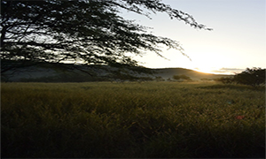
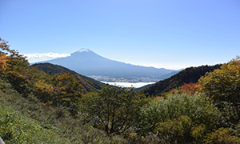
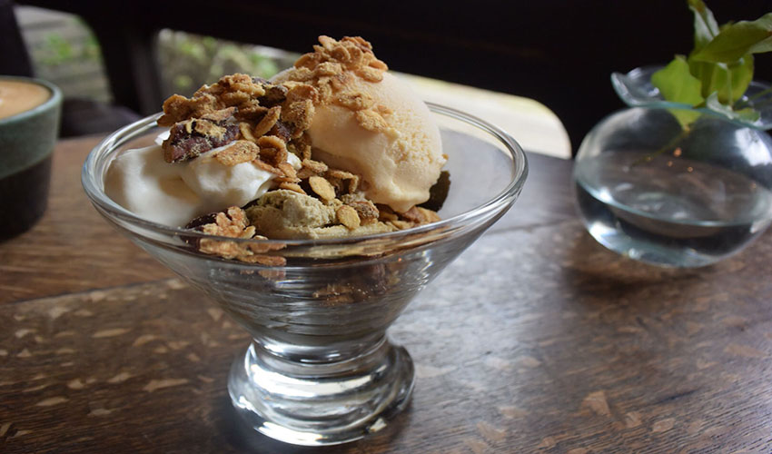

Kawaguchiko
友達とドライブをして河口湖まで行きました。幸運にもとても晴れている日で、 気持ちの良い日帰り旅となりました。写真は太宰治が滞在したと有名な天下茶屋の前で 撮った写真です。車で１５分ほど山を登ったところにあるのですが、晴れていると綺麗な王道の富士山 をみることができます。ただこのスポットにはかなりの人がくるので、混雑は覚悟したほうが良いと思います。 この日は温泉に入りたい気持ちもありましたが、次の日も早い時間に家を出なければなかったので 河口湖を一周して、夕日をみながら帰りました。
2016/01/13

Kominkacafe
西荻窪駅の松庵にある松庵文庫カフェです。実際に暮らしていた人の家が そのままカフェとして使われているので、おばあちゃんちにいってお茶をしている ような落ち着いた時間を過ごすことができます。メニューはとてもヘルシーで、すべてオーガニックな ものを使っています。写真は自家製のきなこアイスに黒蜜、グラノーラを乗せているデザート。 一つ一つ手が込んでいてとてもおいしいです。 カフェ店内には、手作りの陶器やキッチン用品が販売されています。とても雰囲気が良いカフェでした。
2016/01/13
Hawaii
ハワイ、ダイアモンドヘッドに登ってきました。 朝５時に出発したものは良いものの、日の出がなかなか見れず、しぶしぶ降りてしまいました。 ７時頃下山の途中でやっと見ることができました。それがこの写真です。 ハワイとわからない写真ですが、新たな一面をみれたのであえて載せてみます。なんだかアフリカみたいだな。 朝早く起きて自然の中で空気を吸うと本当気持ちが良いですね。この日は心身ともに浄化されたような気持ちに なりました。
2016/01/13